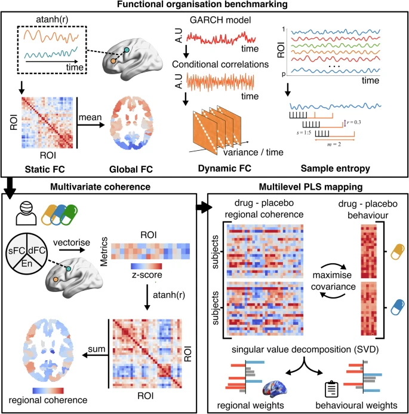
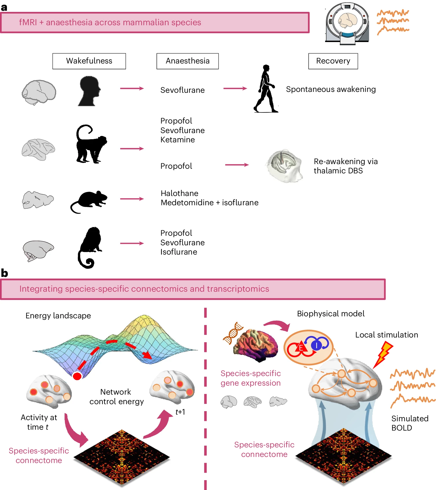
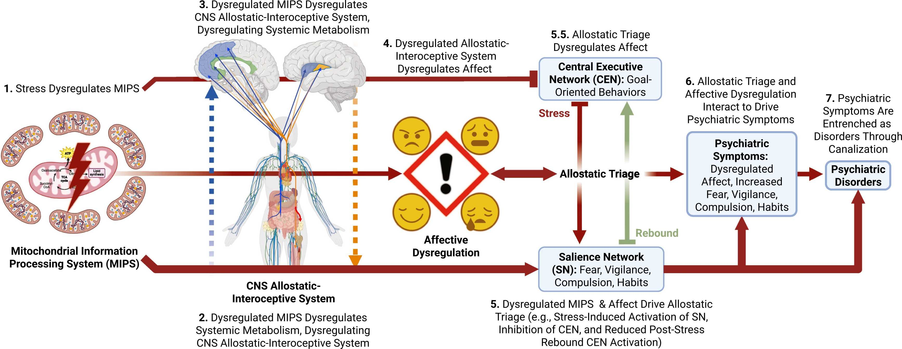

P. Mallaroni, S. P. Singleton, N. L. Mason, T. D. Satterthwaite, J. G. Ramaekers.
(2026). "Spatiotemporal mapping of brain organisation following the administration of 2C-B and psilocybin."
Molecular Psychiatry.

We first benchmarked functional organisation: static FC quantified the mean correlation between ROIs, with
global FC derived as a second-order nodal map of mean connectivity strength; dynamic FC captured the
variance of time-varying FC fluctuations using autoregressive model-based conditional correlations; and
sample entropy measured BOLD signal complexity as the negative log-probability that similar patterns
remain similar over time. We next computed multivariate regional coherence, by integrating across the
nodal strength of first-order metrics. For each subject and condition, we vectorized summed static FC and
dynamic FC, and entropy values across all regions, z-scored these metrics, and correlated them across
ROIs. This produces a feature similarity matrix, after which summed each region’s row-wise similarities to
produce regional coherence scores, showcasing how strongly a region functionally aligns with the rest of
the brain. Finally, to relate system-wide changes in coherence to behaviour, we applied a multilevel
Partial Least Squares (PLS) analysis on per subject change maps (drug-placebo). This models covariance
between two data domains (regional coherence change per drug and subjective effect change per drug),
incorporating a design matrix to account for repeated measures. PLS applies singular value decomposition
to extract latent variables that capture maximal covariance between brain and behaviour.
13
A. I. Luppi, L. Uhrig, J. Tasserie, P. A. M. Mediano, F. E. Rosas,
S. P. Singleton, D. Gutierrez-Barragan, S. Gini, P. Castro, C. M. Signorelli,
D. Golkowski, A. Ranft, R. Ilg, D. Jordan, K. Muta, J. Hata, H. Okano, Z.-Q. Liu, Y. Yee,
A. Destexhe, R. Cofre, D. K. Menon, A. Gozzi, B. Jarraya, E. A. Stamatakis.
(2025). "Convergent transcriptomic and connectomic controllers of information integration and
its anaesthetic breakdown across mammalian brains."
Nature Human Behaviour.

a, Across four mammalian species (human, macaque, mouse and marmoset), we consider fMRI
data acquired
during wakefulness and under a variety of anaesthetic regimes (sevoflurane, propofol, ketamine,
isoflurane, halothane and isoflurane–medetomidine). We also investigate spontaneous recovery of
consciousness (in humans) and re-awakening induced by thalamic deep-brain stimulation (DBS) during
continuous anaesthetic infusion in the macaque. b, We then use network control theory
and biophysical
computational modelling to provide mechanistic insights by integrating species-specific structural
connectivity and species-specific gene expression in human, macaque and mouse.
12
L. Schilling, S. P. Singleton, C. Tozlu, M. Hédo, Q. Zhao,
K. M. Pohl, K. Jamison, A. Kuceyeski.
(2025). "Sex-specific differences in brain activity dynamics of youth with a family
history of substance use disorder."
Nature Mental Health.
D. P. Kelley, S. P. Singleton, K. Venable, G. Sturm, A. Skovgaard,
J. Francis, T. C. Neylan, E. R. Bradley, J. Woolley, M. Picard, A. O'Donovan.
(2025). "The allostatic triage model of psychopathology (ATP Model): How reallocation of brain
energetic resources under stress elicits psychiatric symptoms."
Neuroscience & Biobehavioral Reviews.

Simplified illustration of the complete Allostatic Triage Model of Psychopathology (ATP Model) of
stress-induced psychopathogenesis in seven steps. 1) The lightning bolt in the mitochondria
indicates stress-induced psychopathogenesis in seven steps. 1) The lightning bolt in the mitochondria
indicates
stress-induced dysregulation of the MIPS. 2) The blue dashed arrow going up indicates that dysregulation
of the MIPS in the periphery trickles up to indirectly dysregulate the brain allostatic-interoceptive
system. 3) The orange down arrow in step three indicates that dysregulation of the MIPS in the CNS
directly dysregulates the allostatic-interoceptive system in the CNS, which contributes to systemic
metabolic dysregulation and disease. 4) The red through arrow leading to the “!” surrounded by four facial
expressions representing different affective & emotional states in step four indicates affective
dysregulation induced by steps 1–3. The red arrow and inhibition symbol from the MIPS to the CEN/SN
indicates independent effects of mitochondrial dysregulation on CEN and SN function. 5) The red down arrow
in step five indicates that steps 1–4 exacerbate allostatic triage from the CEN, which mediates
goal-oriented and executive control behaviors, to the SN, which mediates fear, vigilance, compulsive, and
habitual cognition and behaviors that are associated with psychopathology, when overactivated. The
translucent green up arrow represents reduced rebound activation of the CEN after stress, inhibiting a
protective mechanism that limits the deleterious effects of stress on CNS allostatic triage. 5.5)
Highlights the bidirectionality between allostatic triage and affective dysregulation. 6) Affective
dysregulation and allostatic triage interact to drive psychiatric symptoms. 7) Psychiatric symptoms become
entrenched as psychopathology through activity-dependent neuroplasticity, which is sometimes called
canalization. MIPS: Mitochondrial Information Processing System; CNS: Central Nervous System; CEN: Central
executive network; SN: Salience Network. Figure Created on Biorender.com.
10
N. Roy, S. P. Singleton, K. Jamison, P. Mukherjee, S. A. Shah, A. Kuceyeski.
(2025). "Brain activity dynamics after traumatic brain injury indicate increased state transition
energy and preference of lower order states."
NeuroImage: Clinical.
S. P. Singleton, C. Timmermann, A. I. Luppi, E. Eckernäs, L. Roseman,
R. L. Carhart-Harris, A. Kuceyeski. (2025). "Network control energy reductions under DMT
relate to serotonin receptors, signal diversity, and subjective experience."
Nature Communications Biology.
Time-resolved network control analysis of the human brain during a pharmacologically-induced
alteration of consciousness. (a) Fourteen individuals were scanned over two days in which they
received either DMT and saline placebo in separate visits. (b) We deploy a time-resolved network control
analysis of the brain's trajectory through its activational landscape. (c) We find regional control
energy and its correlation with EEG signal entropy and subjective experience are associated with the
serotonin 2a receptor spatial pattern. (d) Using pharmacological information and only the placebo fMRI,
we are able to simulate DMT's impacts on control energy trajectories in the brain.
8Commentary
S. P. Singleton, B. L. Sevchik, S. N. Vandekar, E. C. Strain, S. M. Nayak,
R. H. Dworkin, J. C. Scott, T. D. Satterthwaite. (2025). "An initiative for living evidence
synthesis in clinical psychedelic research."
Nature Mental Health.
A. I. Luppi, S. P. Singleton, J. Y. Hansen, K. W. Jamison, D. Bzdok,
A. Kuceyeski, R. F. Betzel, B. Misic. (2024). "Contributions of network structure,
chemoarchitecture and diagnostic categories to transitions between cognitive topographies."
Nature Biomedical Engineering.
Network control with cognitive topographies. (a) Functional brain activity evolves
through time over a fixed network structure. (b) We define states as 123 meta-analytic activation
maps from the NeuroSynth database. We then use network control theory to quantify the cost of
transitioning between these cognitive topographies. (c) Systematic quantification of transition cost
between each pair of cognitive topographies results in a look-up table mapping the energy required
for each transition.
6Commentary
S. P. Singleton, A. Kuceyeski. (2024). "Bridging Psilocybin-Induced Changes in
the Brain's Dynamic Functional Connectome With an Individual's Subjective Experience."
Biological Psychiatry: Cognitive Neuroscience and Neuroimaging.
S. P. Singleton, P. Velidi, L. Schilling, A. I. Luppi, K. Jamison, L. Parkes,
A. Kuceyeski. (2024). "Altered structural connectivity and functional brain dynamics in individuals
with heavy alcohol use elucidated via network control theory."
Biological Psychiatry: Cognitive Neuroscience and Neuroimaging.
S. P. Singleton, J. B. Wang, M. Mithoefer, C. Hanlon, M. S. George,
A. Mithoefer, O. Mithoefer, A. R Coker, B. Yazar-Klosinski, A. Emerson, R. Doblin,
A. Kuceyeski. (2023). "Altered brain activity and functional connectivity after MDMA-assisted
therapy for post-traumatic stress disorder."
Frontiers in Psychiatry.
Simplified study design. Subjects were assessed and imaged at the start of the study
(baseline). All subjects underwent three non-drug preparatory therapy sessions prior to their first MDMA
dosing session. Each MDMA session was followed by three non-drug integration therapy sessions. After MDMA
session 2 and the subsequent integration sessions, subjects were assessed and the dosing blind was broken.
3
S. P. Singleton, A. I. Luppi, R. L. Carhart-Harris, J. Cruzat, L. Roseman,
D. J. Nutt, G. Deco, M. L. Kringelbach, E. A. Stamatakis, A. Kuceyeski. (2022).
"Receptor-informed network control theory links LSD and psilocybin to a flattening of the
brain's control energy landscape."
Nature Communications.
Mapping the energy landscape of the human brain with network control theory.
(a) We concatenated all fMRI time series together and employed the k-means clustering algorithm to
identify common activation patterns, or states. (b) Using network control theory and a representative
structural connectome, we calculated the minimum energy required to transition between states. Our
calculations reveal an energy landscape that is flattened by LSD and psilocybin. (c) Weighting the
energy calculations of the placebo brain states with inputs from PET-derived receptor density maps of
the serotonin 2a receptor also resulted in a flattened energy landscape.
2
M. Nadgorny, D. T. Gentekos, Z. Xiao, S. P. Singleton, B. P. Fors,
L. A. Connal. (2017). "Manipulation of Molecular Weight Distribution Shape as a New Strategy
to Control Processing Parameters."
Macromolecular Rapid Communications.
M. S. Ganewatta, K. P. Miller, S. P. Singleton, P. Mehrpouya-Bahrami,
Y. P. Chen, Y. Yan, M. Nagarkatti, P. Nagarkatti, A. W. Decho, C. Tang. (2015).
"Antibacterial and Biofilm-Disrupting Coatings from Resin Acid-Derived Materials."
Biomacromolecules.